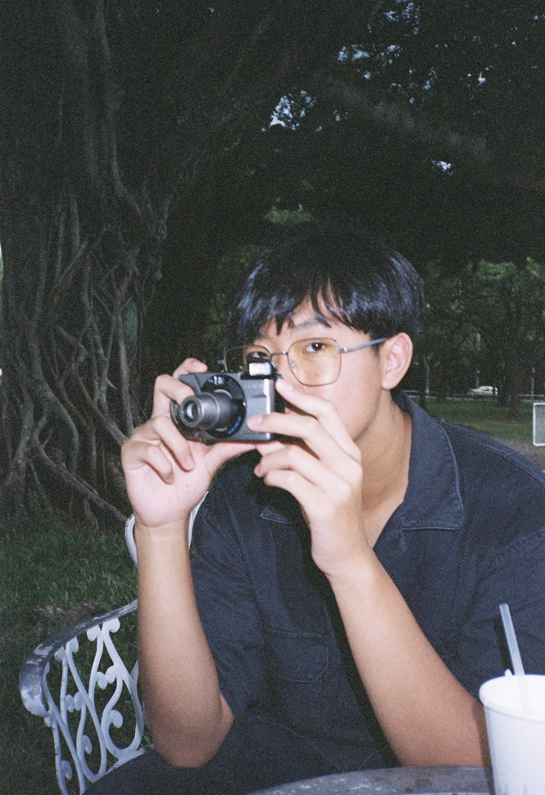

生於台灣南投
現居、就學於台北
董書劭，現就讀國立臺北藝術大學新媒體藝術學系。創作多以錄像、機械裝置、影像檔案與自動控制系統為媒介，關注教育制度、觀看關係、技術系統與身體經驗之間的轉換。
作品常從日常經驗與技術失效出發，將掃描、列印、碎紙、撞擊、循環與觀看機制轉化為作品中的敘事結構。透過機械動作與影像重複，作品嘗試回應當代生活中知識、身體與媒介逐漸自動化的狀態。
目前創作包括《學而不思則罔，思而不學則殆》、《窺視》、《人類創作防禦系統》等，作品涉及新媒體藝術、互動裝置、錄像藝術與觀念攝影。
